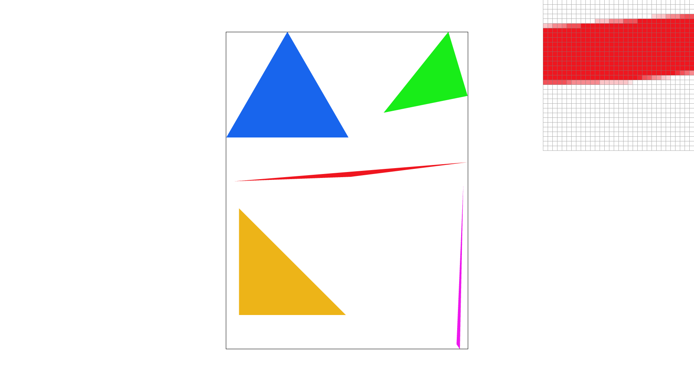
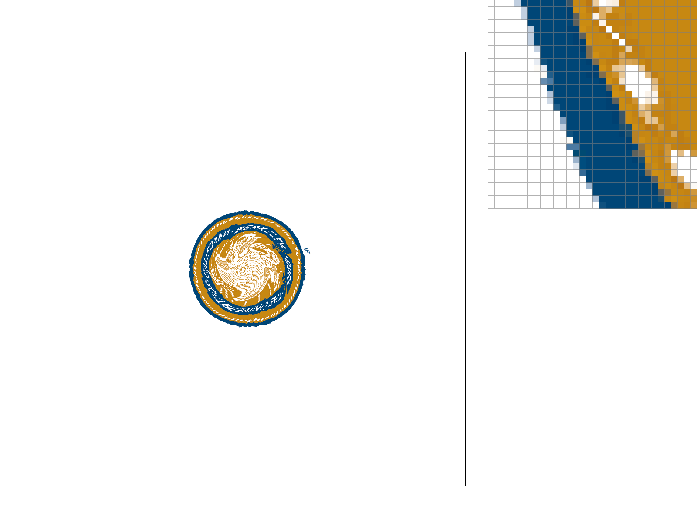
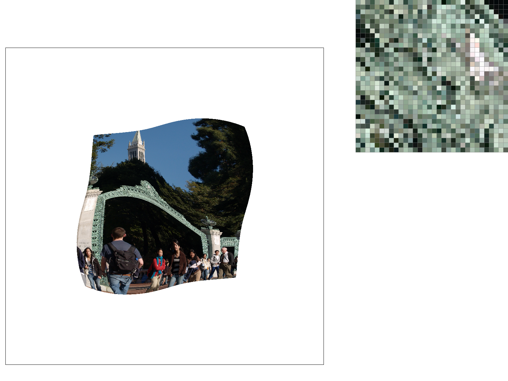

Overview
In this homework, I built a software rasterizer step by step, starting with basic triangle rasterization and extending it with antialiasing, transformations, color interpolation, texture sampling, and mipmapping.
I first implemented single-color triangle rasterization using bounding boxes and edge tests, then added supersampling to reduce aliasing along triangle boundaries. I implemented 2D affine transformations using homogeneous coordinates and used them to modify the provided robot scene. Next, I used barycentric coordinates to interpolate vertex colors and texture coordinates across triangles.
For texture mapping, I implemented nearest-neighbor and bilinear pixel sampling, followed by mipmap level sampling using L_ZERO, L_NEAREST, and L_LINEAR. Together, these tasks demonstrate how sampling choices affect aliasing, image quality, memory usage, and rendering cost.
Task 1: Drawing Single-Color Triangles
In this task, I implemented triangle rasterization in RasterizerImp::rasterize_triangle(). The goal is to determine which pixels are covered by a triangle and then fill those pixels with the triangle's color.
I start by computing the smallest axis-aligned bounding box that contains the three triangle vertices. I find the minimum and maximum x and y coordinates of the vertices, then clip those values to the framebuffer dimensions. This prevents the rasterizer from checking pixels outside the image and also avoids scanning the entire framebuffer when the triangle only occupies a small region.
Inside the bounding box, I examine each candidate pixel once. Rather than testing the integer pixel coordinate itself, I sample at the center of the pixel:
This follows the sampling convention required by the assignment. Conceptually, each pixel is treated as representing a sample taken from its center.
To determine whether that sample lies inside the triangle, I use three signed edge tests. Each test compares the sample point against one directed edge of the triangle. The sign of the result tells me which side of that edge the sample lies on.
For a point inside a triangle, the sample must lie on the same relative side of all three directed edges. Therefore, I compute three edge values and accept the sample if all three values are nonnegative or if all three values are nonpositive.
Checking both possibilities is important because the triangle vertices may be provided in either clockwise or counter-clockwise order. Reversing the winding direction reverses the signs of the edge tests, but the geometric triangle is still the same. Accepting both sign conventions lets the rasterizer correctly handle either winding order.
I use >= and <= rather than strict comparisons so that samples that lie exactly on one of the triangle boundaries are also rasterized, as required by the specification.
When a sample passes the three edge tests, I write the triangle's color to the corresponding location in the sample buffer. This keeps triangle rasterization compatible with the supersampling implementation introduced in Task 2.
Efficiency
My rasterizer does not test every pixel in the framebuffer. It only examines pixels inside the triangle's bounding box. If the bounding box contains \(W\times H\) candidate pixels, the algorithm performs a constant amount of work for each of those pixels, giving approximately O(\(W\times H\)) work for the triangle.
This satisfies the requirement that the implementation be no worse than a bounding-box rasterizer because every candidate pixel in the bounding box is tested at most once, and pixels outside the bounding box are never considered.
Result and Discussion
The image below shows basic/test4.svg rendered using one sample per pixel. The pixel inspector is positioned along the thin red triangle, where the discrete pixel coverage along the triangle edge is particularly visible.

basic/test4.svgLooking at the pixel inspector makes it easier to see how the continuous triangle edge becomes a discrete set of covered pixels. At the current sample rate of one sample per pixel, each pixel is either fully filled or not filled depending on whether its center sample lies inside the triangle. This produces the visible stair-step pattern along thin or slanted edges, which motivates the supersampling work in Task 2.
Task 2: Antialiasing by Supersampling
In Task 1, I sampled each pixel only once at its center. This works for determining whether a pixel is inside a triangle, but it creates noticeable jagged or stair-step patterns along diagonal and thin triangle edges. In this task, I implemented supersampling to reduce these aliasing artifacts.
The idea behind supersampling is to take several samples at different locations inside each pixel instead of making the entire pixel depend on only one sample. Each subpixel sample is tested independently against the triangle. After all of the geometry has been rasterized, the colors of the subpixel samples are averaged together to produce the final color of the framebuffer pixel.
Subpixel Sampling
I divide every framebuffer pixel into a square grid of subpixel samples. The width and height of this grid are both \(\sqrt{\mathrm{sample\_rate}}\).
For example:
- A sample rate of 1 uses a 1 × 1 grid.
- A sample rate of 4 uses a 2 × 2 grid.
- A sample rate of 16 uses a 4 × 4 grid.
Each sample is positioned at the center of its own subpixel cell. For a 2 × 2 grid, for example, the offsets along each axis are 0.25 and 0.75 instead of sampling only at 0.5.
I use the same three edge tests from Task 1 for every subpixel sample. If a subpixel is inside the triangle, I store the triangle color for that sample in the sample buffer.
Sample Buffer
I expanded the sample buffer so that it stores sample_rate colors for every framebuffer pixel rather than only one color.
The total number of samples in the buffer is:
All of the samples belonging to one framebuffer pixel are stored next to each other. For pixel (x, y), its first sample begins at:
The remaining samples for that pixel follow this location in subpixel row order.
I also updated the buffer whenever the framebuffer size or sample rate changes so that it always contains the correct number of samples and does not keep stale values from a previous render.
Points and Lines
Triangles use true subpixel sampling, but points and lines do not need to be supersampled for this assignment. To keep them visible after changing the sample-buffer layout, fill_pixel() fills all of the samples belonging to that framebuffer pixel with the same color.
This means points and lines continue to appear normally even when the triangle rasterizer is using a higher sample rate.
Resolving the Supersample Buffer
After rasterization, I resolve the supersampled image back to the normal framebuffer.
For each framebuffer pixel, I add together all of its subpixel colors and divide the result by sample_rate. This average becomes the final pixel color.
Pixels completely covered by the triangle have all of their samples filled and therefore keep the full triangle color. Pixels completely outside remain the background color. Pixels near triangle boundaries often contain a mixture of covered and uncovered samples, which produces an intermediate color.
This partial coverage is what makes the triangle edges appear smoother.



Comparison of Sample Rates
At 1 sample per pixel, each pixel makes a binary coverage decision based on a single center sample. Along the thin red triangle edge, pixels are therefore either fully covered or not covered at all, which produces the visible stair-step pattern.
At 4 samples per pixel, each pixel contains a 2 × 2 subpixel grid. Boundary pixels can contain a mixture of covered and uncovered samples, so averaging the samples produces intermediate colors. This makes the edge appear smoother.
At 16 samples per pixel, each pixel uses a 4 × 4 grid, giving a more detailed estimate of triangle coverage. The pixel inspector shows more gradual intermediate shades around the boundary, and the thin diagonal edge appears smoother than at the lower sampling rates.
Supersampling improves antialiasing by approximating how much of each pixel is covered by the triangle instead of relying on only one sample point. The tradeoff is increased computation and memory usage, because more samples must be tested, stored, and averaged for every output pixel.
Task 3: Transforms
In this task, I implemented three basic 2D affine transformations: translation, scaling, and rotation. These transformations are represented using 3×3 matrices because the renderer uses homogeneous coordinates.
A normal 2D point (x, y) is represented as (x, y, 1). The extra coordinate makes it possible to represent translation using matrix multiplication, which means translation, scaling, and rotation can all be handled in the same way.
Translation
Translation moves an object horizontally and vertically by some amount (dx, dy).
The transformation matrix is:
Multiplying a point by this matrix adds dx to the x-coordinate and dy to the y-coordinate.
Scaling
Scaling changes the size of an object along the x and y directions.
The x-coordinate is multiplied by sx, while the y-coordinate is multiplied by sy.
Rotation
Rotation turns an object around the origin by an angle θ.
The function receives the angle in degrees, so I first convert it to radians before using sin() and cos().
Combining Transformations
The order of transformations matters. When matrices are multiplied together, the transformation on the right is applied first.
For example:
applies the scaling first, then rotation, and finally translation.
This is especially important for hierarchical objects such as the robot, because each body part may have a local transform that is then combined with the transforms of its parent groups.
My Robot
For my modified robot, I changed the screen-right forearm so that it is raised in a waving position.
Instead of simply rotating the forearm around the global origin, I used a sequence of translations and a rotation so that it rotates around the elbow. The transform I used was conceptually:
translate → rotate → translate
This allows the arm to keep its connection to the upper arm while changing its orientation.


The result demonstrates why transformation composition is useful. By changing only the local transform of the forearm, I could create a new pose without changing the geometry of the rest of the robot.
Task 4: Barycentric Coordinates
Barycentric coordinates are a way to describe the position of a point inside a triangle using three weights, one for each vertex. I think of these weights as telling me how much influence each vertex has on the sample point.
If the three triangle vertices are \(v_0\), \(v_1\), and \(v_2\), then a point inside the triangle can be represented using three weights:
A point close to \(v_0\) has a larger α, while a point close to \(v_1\) or \(v_2\) has larger values of β or γ. Near the center of a triangle, the three weights are generally more balanced.
Computing the Barycentric Weights
In my implementation, I compute the barycentric weights using signed area ratios.
First, I compute the signed area of the entire triangle. Then, for every sample point inside the triangle, I use the edge opposite each vertex to compute that vertex's weight.
Conceptually:
Because I use the same signed-area convention in both the numerator and denominator, the barycentric weights still work if the triangle vertices are listed in the opposite winding order.
I also skip triangles with zero area so that the implementation does not divide by zero.
Interpolating Vertex Colors
Once I have the three barycentric weights, I use them to blend the colors stored at the triangle's three vertices:
A sample close to one vertex therefore looks more like that vertex's color. A sample between multiple vertices receives contributions from each of their colors.
This produces a smooth color transition across the triangle instead of using one constant color for the entire triangle.
Interaction with Supersampling
This task also works with the supersampling system from Task 2.
For every subpixel sample covered by the triangle, I compute its own barycentric coordinates and interpolated color. I store this color in the sample buffer. Later, resolve_to_framebuffer() averages the subpixel colors together to produce the final framebuffer pixel.
At a sample rate of 1, this calculation happens once at the center of each pixel. At higher sample rates, it happens independently for every subpixel sample.
Result

basic/test7.svg rendered at sample rate 1 using barycentric color interpolation. The smooth color wheel is created by blending the colors stored at the triangle vertices.The color wheel shows barycentric interpolation across the triangles. Each triangle blends the colors stored at its three vertices according to the barycentric weights of the sample point.
Samples closer to a particular vertex receive a larger contribution from that vertex's color, while samples between vertices receive contributions from multiple vertex colors.
In this supplied scene, the triangles share a black center vertex. As samples move toward the center, the contribution from the black vertex increases, so the colors darken smoothly toward the middle. The continuous gradients within each triangle show that the interpolated color varies smoothly rather than changing abruptly.
Task 5: Pixel Sampling for Texture Mapping
In this task, I implemented texture mapping using two different pixel sampling methods: nearest-neighbor sampling and bilinear sampling.
Texture mapping allows an image to be applied to geometry. Instead of assigning a fixed color to each point on a triangle, each triangle vertex is assigned a texture coordinate (u, v). These coordinates describe a location inside the texture image.
The texture coordinates are normalized, so u and v are independent of the actual texture dimensions. A coordinate near (0, 0) refers to one corner of the texture, while a coordinate near (1, 1) refers to the opposite corner.
Interpolating Texture Coordinates
Each vertex of a textured triangle has its own (u, v) coordinate. During rasterization, I also need a texture coordinate for every sample inside the triangle.
I reuse barycentric coordinates from Task 4 to interpolate the texture coordinates. For barycentric weights weight0, weight1, and weight2, the texture coordinate of a sample is:
This allows the texture coordinates to change smoothly across the triangle. Every covered subpixel therefore receives its own interpolated (u, v) coordinate before the texture is sampled.
For Task 5, I always sample from mipmap level 0, which is the original full-resolution texture.
Mapping Texture Coordinates to Texels
After calculating (u, v), I convert the normalized texture coordinates into positions inside the actual texture image.
I use:
Using width - 1 and height - 1 makes the normalized endpoints line up with the texel centers. Therefore, u = 0 corresponds to the first texel and u = 1 corresponds to the final texel. The same idea applies to the vertical direction.
I also clamp the texture coordinates to valid bounds so that the sampler cannot access outside the texture.
During implementation, I initially mapped the normalized coordinates using the full texture width and height. After comparing my rendered results with the provided reference images and testing the texture-coordinate endpoints, I found that this shifted the sampling locations. I corrected the mapping to use width - 1 and height - 1, which made the texture endpoints line up correctly with the first and last texel centers.
Nearest-Neighbor Sampling
Nearest-neighbor sampling selects a single texel for each texture lookup.
After converting the normalized texture coordinate into (x, y) coordinates in texture space, I round the position to the nearest valid texel and return that texel's color.
This method is simple because only one texel needs to be accessed for each sample. However, it can produce blocky or abrupt transitions. If two neighboring texels have very different colors, a small change in the texture coordinate can suddenly cause a completely different texel to be selected.
Bilinear Sampling
Bilinear sampling creates a smoother result by considering the four texels surrounding the requested texture position.
For a position between texels, I identify the top-left, top-right, bottom-left, and bottom-right texels. I first interpolate horizontally between the two texels in the top row and between the two texels in the bottom row. I then interpolate vertically between those two intermediate colors.
The final color is therefore a weighted combination of all four neighboring texels.
Because the interpolation weights change gradually as the texture coordinate moves, bilinear sampling generally creates smoother transitions than nearest-neighbor sampling.
Interaction with Supersampling
Texture sampling also works together with the supersampling system from Task 2.
For every subpixel covered by a textured triangle, I compute the barycentric coordinates, interpolate the (u, v) texture coordinate, sample the texture at that location, and store the resulting color in the supersample buffer.
Because different subpixel locations generally produce different texture coordinates, supersampling averages multiple texture lookups within each output pixel. This improves geometric edge coverage and can also reduce texture aliasing by combining texture samples taken at different subpixel positions.
After rasterization, resolve_to_framebuffer() averages all of the subpixel colors belonging to each output pixel.
Pixel filtering and supersampling therefore address different but related parts of the rendering process. Nearest or bilinear filtering determines how each individual texture lookup is reconstructed from texels, while supersampling evaluates several geometry and texture samples within each output pixel and averages them together.
Results
Nearest Sampling — 1 Sample per Pixel


texmap/test5.svg rendered using nearest-neighbor texture sampling with 1 sample per pixel.At this setting, each output pixel is sampled once and each texture lookup selects only one texel. In the pixel inspector, the high-contrast texture details show relatively abrupt transitions between neighboring texel colors. Fine details appear sharp, but they can also look blocky or aliased.
Nearest Sampling — 16 Samples per Pixel

texmap/test5.svg rendered using nearest-neighbor texture sampling with 16 samples per pixel.Increasing the supersampling rate gives each output pixel a 4 × 4 grid of subpixel samples. This improves the representation of geometric edges and partial pixel coverage.
However, every individual texture lookup still chooses only one nearest texel. As a result, supersampling can reduce some jagged geometry edges while the texture itself can still contain abrupt texel-to-texel transitions.
Bilinear Sampling — 1 Sample per Pixel

texmap/test5.svg rendered using bilinear texture sampling with 1 sample per pixel.Bilinear sampling produces smoother texture values because each lookup blends four neighboring texels instead of selecting only one.
The pixel inspector shows more intermediate colors around high-contrast texture features. In particular, the transitions between the blue, gold, and white portions of the seal are less abrupt than with nearest-neighbor sampling.
Bilinear Sampling — 16 Samples per Pixel

texmap/test5.svg rendered using bilinear texture sampling with 16 samples per pixel.This combines the smoother texture reconstruction of bilinear filtering with the improved geometric coverage from supersampling.
In this example, this combination produces the smoothest-looking transitions of the four configurations, especially around detailed and high-contrast portions of the texture.
Comparison and Discussion
The difference between nearest-neighbor and bilinear sampling is easiest to see when the texture contains small or high-contrast features.
Nearest-neighbor sampling always returns the color of one texel. If the texture coordinate crosses the boundary between two texels, the returned color can change suddenly. This is why nearest sampling can produce blocky or harsh-looking transitions.
Bilinear sampling instead blends nearby texels. As the texture coordinate moves from one texel toward another, the contribution of each neighboring texel changes gradually. This creates smoother color transitions.
The difference is particularly visible in the Berkeley seal because the texture contains thin white details next to dark blue and gold regions. These high-contrast boundaries make the difference between selecting one texel and blending several texels easier to see.
Increasing the sample rate from 1 to 16 also improves the rendering. Supersampling improves geometric edge coverage and, because different subpixel locations can produce different texture coordinates, it can also reduce some texture aliasing by averaging multiple texture samples within each output pixel. Bilinear filtering operates at each individual texture lookup by interpolating between neighboring texels, so the two techniques address related but different parts of the sampling process.
The largest differences between nearest and bilinear sampling occur when the texture coordinate falls between texel centers and the surrounding texels have very different colors. If neighboring texels contain similar colors, the difference between the two methods is much less noticeable.
Overall, nearest-neighbor sampling is simpler and preserves sharp texel boundaries, while bilinear sampling generally produces smoother texture reconstruction at the cost of reading and interpolating several texels for each texture sample.
Task 6: Level Sampling with Mipmaps
In this task, I implemented mipmap level sampling for texture mapping. The goal is to reduce aliasing when a texture is minified, meaning that a large region of the original texture is projected onto a relatively small number of screen pixels.
In Task 5, all texture lookups used mipmap level 0, which is the original full-resolution texture. This works well when the texture is viewed close to its original size, but it can cause strong aliasing when many texels map to a single output pixel.
Mipmaps address this problem by storing several prefiltered versions of the same texture at progressively lower resolutions. Instead of always sampling the highest-resolution texture, the renderer can choose a mipmap level whose resolution better matches the texture footprint of the current screen pixel.
Computing the Texture Footprint
To determine which mipmap level should be used, I estimate how quickly the texture coordinates change across the screen.
For every covered sample, I compute three texture coordinates:
p_uv = the interpolated texture coordinate at the current sample
p_dx_uv = the interpolated texture coordinate one framebuffer pixel to the right
p_dy_uv = the interpolated texture coordinate one framebuffer pixel below
The important detail is that p_dx_uv and p_dy_uv are evaluated one full framebuffer pixel away, even when supersampling is enabled.
I then calculate the texture-coordinate differences:
These UV differences are converted into full-resolution texel units using the original texture width and height.
The horizontal and vertical texture-space footprint lengths are:
I use the larger of the two:
The continuous mipmap level is then determined using:
If L is less than or equal to 1, I use level 0. This corresponds to magnification or approximately one texel per screen pixel, so moving to a lower-resolution mipmap is unnecessary.
I also clamp the result so that the selected level never exceeds the final available mipmap level.
Level Zero Sampling
L_ZERO always samples from mipmap level 0.
This is equivalent to the behavior from Task 5. The renderer ignores the calculated texture footprint and always uses the full-resolution texture.
L_ZERO can preserve a large amount of fine texture detail, but during strong minification this can create aliasing because many high-resolution texels may contribute to only one screen pixel.
L_ZERO can still use either nearest-neighbor or bilinear pixel sampling.
Nearest Level Sampling
L_NEAREST first computes the continuous mipmap level D.
It then rounds D to the nearest integer mipmap level and samples only that level.
For example, if the calculated level is approximately 2.2, level 2 is selected. If the level is approximately 2.8, level 3 is selected.
This usually reduces minification aliasing significantly because the selected texture resolution is closer to the size of the texture footprint on the screen.
However, because only one discrete mipmap level is selected, transitions between mip levels can still be noticeable as the viewing scale changes.
Linear Level Sampling
L_LINEAR also begins with the continuous mipmap level D, but instead of rounding to one level, it uses the two adjacent mipmap levels.
For example, if:
the renderer samples both level 2 and level 3.
The two resulting colors are then interpolated using the fractional part of D.
This produces a smoother transition between mipmap levels.
When L_LINEAR is combined with bilinear pixel sampling, the renderer performs bilinear filtering within each of the two mip levels and then linearly interpolates between the two levels. This combination is commonly called trilinear filtering.
Pixel Sampling and Level Sampling
Pixel sampling and level sampling solve related but different problems.
Pixel sampling determines how the color is reconstructed within a selected mipmap level.
P_NEAREST reads the closest texel.
P_LINEAR performs bilinear interpolation using four neighboring texels.
Level sampling determines which mipmap resolution should be used.
L_ZERO always uses the original texture.
L_NEAREST chooses the nearest mipmap level.
L_LINEAR interpolates between two neighboring mipmap levels.
Because these choices are independent, the renderer supports all six combinations of the three level-sampling modes and the two pixel-sampling modes.
Custom Texture
For this comparison, I used a photograph of Sather Gate and the Campanile at UC Berkeley.
Image source: Tristan Harward, The Campanile and Sather Gate on the UC Berkeley campus, Wikimedia Commons, CC BY-SA 2.5.

I chose this image because it contains many high-frequency details, including tree foliage, thin architectural structures, the decorative metalwork of Sather Gate, windows, people, and other small features.
These details are useful for observing the effects of texture minification because they become difficult to represent when the image is compressed into a small area of the framebuffer.
I mapped the image using the geometry from the provided texture-mapping test scene so that different portions of the texture undergo significant minification.
Results
Level Zero + Nearest Pixel Sampling


L_ZERO and P_NEAREST.With L_ZERO, the renderer always samples the original full-resolution texture. P_NEAREST also chooses only one texel for every texture lookup.
In the pixel inspector, the foliage and other fine details contain many abrupt color changes. Because high-resolution texture information is being compressed directly into the small rendered surface, the result contains more high-frequency variation and visible aliasing.
Level Zero + Bilinear Pixel Sampling

L_ZERO and P_LINEAR.This configuration still uses only the full-resolution texture, but bilinear pixel sampling blends four neighboring texels for each texture lookup.
The pixel inspector therefore shows somewhat smoother local color transitions than nearest-neighbor sampling. However, the renderer is still attempting to represent all of the original texture detail at level 0, so bilinear filtering alone does not solve the larger minification problem.
The difference between Figures 6a and 6b is present, but relatively subtle compared with changing the mipmap level.
Nearest Level Sampling + Nearest Pixel Sampling

L_NEAREST and P_NEAREST.With L_NEAREST, the renderer estimates the texture footprint and selects a lower-resolution mipmap level when the texture is minified.
The effect is much more noticeable in the pixel inspector. The high-frequency foliage is smoother and contains less noisy variation because the mipmap has already filtered together groups of high-resolution texels before sampling occurs.
Even though P_NEAREST is still selecting one texel from the chosen mipmap, using an appropriate mip level greatly reduces the aliasing caused by minification.
Nearest Level Sampling + Bilinear Pixel Sampling

L_NEAREST and P_LINEAR.This configuration combines mipmap level selection with bilinear interpolation inside the selected level.
The selected mip level reduces high-frequency aliasing caused by minification, while bilinear filtering smooths the transitions between nearby texels within that mip level.
In this example, the result appears smoother than the level-zero configurations, particularly in highly detailed regions such as the foliage and architectural features.
Comparison
The largest visual difference in these images comes from changing the level sampling method rather than only changing the pixel sampling method.
Comparing L_ZERO + P_NEAREST with L_ZERO + P_LINEAR shows that bilinear filtering can smooth local texel transitions. However, both configurations still use the full-resolution texture, so both retain a large amount of high-frequency information during minification.
When switching to L_NEAREST, the difference becomes much more visible. The renderer selects a lower-resolution representation of the texture that better matches the size of the texture footprint on the screen. This removes much of the high-frequency information that cannot be represented accurately at the current output resolution.
The pixel inspector makes this particularly clear in the foliage. With level-zero sampling, neighboring pixels vary sharply because the renderer is sampling directly from the detailed original image. With nearest-level sampling, the colors are more averaged because the selected mipmap level has already filtered the original texture.
Pixel sampling and level sampling therefore complement each other. Bilinear pixel sampling reduces discontinuities between neighboring texels, while mipmap level sampling reduces aliasing caused by using a texture resolution that is too high for the projected screen size.
Speed, Memory, and Antialiasing Tradeoffs
The different sampling methods have different costs.
P_NEAREST is the least expensive pixel sampling method because it requires only one texel lookup.
P_LINEAR is more expensive because it requires four neighboring texel lookups and interpolation between their colors, but it usually produces smoother texture reconstruction.
L_ZERO is simple because it always accesses level 0 and does not need to choose a mipmap level. However, it provides poor antialiasing when textures are strongly minified.
L_NEAREST requires calculating the texture footprint and selecting an appropriate mip level, but it still samples only one mipmap level for each texture lookup. It provides substantially better minification behavior than L_ZERO.
L_LINEAR is more computationally expensive because it samples two neighboring mipmap levels and blends the resulting colors. When combined with P_LINEAR, it requires bilinear filtering at both levels followed by another interpolation between the levels.
Mipmaps also require additional memory because several filtered versions of the original texture must be stored. For a standard mipmap pyramid, the additional storage is roughly one third of the original texture size.
This extra memory and sampling work provide an important benefit: much better antialiasing and smoother behavior when textures become smaller on the screen.
Mipmap Generation Fix
While testing Task 6, I also found an issue in mipmap generation where the final 1 × 1 mipmap level could be allocated but not filled.
For example, an all-white 8 × 8 texture could incorrectly produce a black final mip level.
I corrected the mip-generation loop so that the final level is generated as well. I tested the fix using square textures, odd-sized textures, single-row textures, single-column textures, and 1 × 1 textures.
This ensures that level sampling remains valid even when the calculated texture footprint reaches the smallest available mipmap level.
Summary
Mipmapping provides a way to select a texture resolution that better matches the projected size of a texture on the screen.
L_ZERO always samples the original texture, L_NEAREST selects the closest mipmap level, and L_LINEAR blends between two adjacent levels.
The results show that changing from level-zero sampling to mipmap-based level sampling has a major effect during minification. Bilinear pixel sampling further smooths local texel transitions, while mipmap level sampling addresses the larger problem of high-frequency texture information being compressed into too few screen pixels.
Together, pixel sampling and level sampling provide a practical tradeoff between rendering cost, memory usage, and image quality.